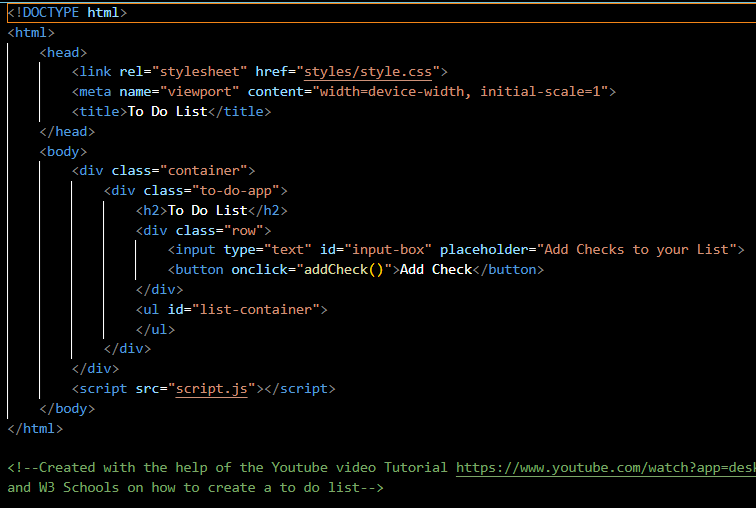
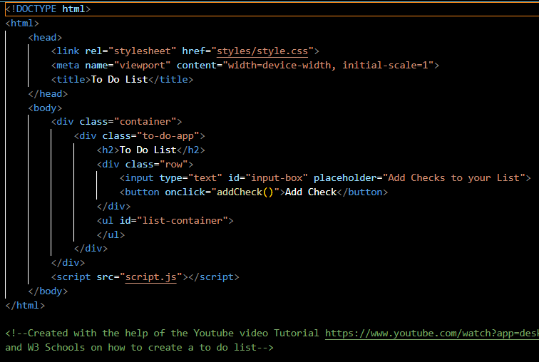

Professional Skills
 


To Do List
To Do List was another task for the Second FED Assigment where we needed to create a to do list, where we can add new task, mark it as finished and be able to delete it.
There is also a point in the Assignment mentioning that there needs to be filter between all, completed and active tasks but I asked the teacher about it when I was showing
the list I had and the teacher said that it is already good. To make the list so I can add new items and mark them as finished I used this tutorial: "To Do List"
This is one of the 3 main and the most important assignments for Front End Development and making it directly relates to the Development Learning Outcome because it consists
of every programming aspect from HTML and CSS to Java Script.